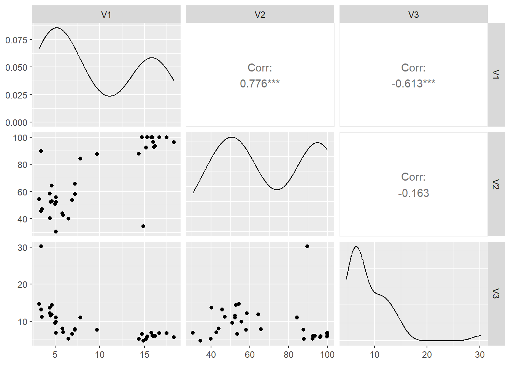

datos<-read.table("datos/acciones.txt")
n=dim(datos)[1]
n[1] 34Calcula la primera componente principal con los logaritmos del fichero acciones.txt que podéis descargad en Aula Digital. Las observaciones corresponden a distintas acciones que cotizan en el mercado español y las variables son:
V1 la rentabilidad efectiva por dividendos,V2 la proporción de beneficios que va a dividendosV3 el ratio entre precio por acción y beneficios.¿Cuál de las variables está mejor representada por la componente principal 1?
datos<-read.table("datos/acciones.txt")
n=dim(datos)[1]
n[1] 34La tabla presenta tres medidas de rentabilidad de 34 acciones en bolsa. Vamos a reescribirlas para ganar interpretabilidad. Llamamos \(d\) a los dividendos por acción, \(p\) al precio de la acción, \(B\) al beneficio y \(N\) al número de acciones.
V1 es la rentabilidad efectiva por dividendos, es decir, dividendos repartidos por acción divididos por precio de la acción. \(V1=\frac{d}{p}\).
V2 es la proporción de beneficios que va a dividendos. \(V2=\frac{dN}{B}\).
V3 es el cociente entre precio y beneficio por acción. \(V3=\frac{p}{B/N}=\frac{pN}{B}\)

Las densidades indican un alejamiento de la distribución normal para las tres variables. Las dos primeras sugieren la presencia de dos grupos de datos distintos (acciones con comportamientos distintos), y la tercera tiene una densidad muy asimétrica, con al menos un valor atípico.
Por la forma de cálculo de las variables, es lógico esperar alta correlación positiva entre V1 yv2. La correlación negativa baja entre V1 yv3, así como alta entre V2 yv2 también se puede esperar por la fórmulas de las variables.
La matriz de varianzas-covarianzas de las variables originales V1, v2 y V3 es:
S0=round(((n-1)/n)*cov(datos),2)
S0 V1 V2 V3
V1 28.24 97.49 -15.24
V2 97.49 559.28 -18.00
V3 -15.24 -18.00 21.90Las densidades de las tres variables han mostrado una clara falta de normalidad y entre ellas hay relaciones no lineales. En estas condiciones, la matriz de varianzas-covarianzas no es un buen resumen de las relaciones de dependencia existentes.
Para tratar de resolver el problema anterior, podemos usar el logaritmo que es una de las transformaciones más utilizadas para datos positivos ya que:
Las distribuciones que describen el tamaño de las cosas (renta de países o familias habitantes en las principales ciudades del mundo, tamaño de empresas, consumo de energía en hogares, etc), son generalmente muy asimétricas, pero se convierten en aproximadamente simétricas al expresar la variable en logaritmos.
Cuando las diferencias relativas entre los valores de la variable sean importantes, conviene expresar las variables en logaritmos, ya que las diferencias entre logaritmos equivalen a diferencias relativas en la escala original.
La variabilidad de las variable transformada es independiente de las unidades de medida. Para comprobar esta última propiedad, supongamos una variable aleatoria \(X\) que transformamos con \(Y = \log X\), la variable transformada tiene media \(\mu_Y\) y varianza \(\sigma^2_Y\). Si cambiamos las unidades de medida de \(X\) multiplicando por una constante, \(Z = kX\), entonces la variable \(\log Z\) tiene media \(Y + \log k\) y la misma varianza que la variable \(\log X\).
Tomando logaritmos sobre las observaciones originales, la matriz de varianzas-covarianzas de las variables transformadas, sería:
datos_l=log(datos)
S=round(((n-1)/n)*cov(datos_l),2)
S V1 V2 V3
V1 0.35 0.15 -0.19
V2 0.15 0.13 -0.03
V3 -0.19 -0.03 0.16Observamos que los logaritmos modifican mucho los resultados. Los datos ahora son más homogéneos y la variable de mayor varianza pasa a ser la primera, el logaritmo de la rentabilidad efectiva, mientras que la menor es la segunda, el logaritmo de la proporción de beneficios que va a dividendos. La relación entre el logaritmo del ratio precio/beneficios y la rentabilidad efectiva es negativa. Las otras relaciones son débiles.
Una ventaja adicional de los logaritmos es que hace las variables independientes de la escala de medida: como vimos, Si multiplicamos las variables por una constante al tomar logaritmos esto es equivalente a sumar una cantidad y sumar una constante a los datos no altera su variabilidad. Por tanto, al tomar logaritmos en las variables, las varianzas pueden compararse aunque los datos tengan distintas dimensiones.
Los valores propios son las raíces de la ecuación
\[ \begin{equation} \begin{split} |S-\lambda I| & = \left| \begin{pmatrix}0.35 & 0.15 & -0.19\\ 0.15 & 0.13 & -0.03 \\ -0.19 & -0.03 & 0.16\end{pmatrix} -\begin{pmatrix} \lambda & 0 & 0\\ 0 & \lambda & 0 \\ 0 & 0 & \lambda\end{pmatrix} \right| \\ & = 0.000382-0.0628\lambda+0.64 \lambda^2 -\lambda^3 =0 \end{split} \end{equation} \] Buscamos las raíces de este polinomio son
library(polynom)Warning: package 'polynom' was built under R version 4.3.2p=polynomial(coef=c(0.00038,-0.0628,0.64,-1))
raices=round(solve(p),3)Las raíces son \(\lambda_1\)=0.521, \(\lambda_2\)=0.113 y \(\lambda_3\)=0.006.
El vector propio asociado a \(lambda_1\) nos da los pesos de la primera componente principal. Para calcularlo manualmente, debemos resolver el sistema \[S \mathbf{a_1}= \lambda_1 \mathbf{a_1}\] que conduce a
\[ \begin{equation} \begin{split} \begin{pmatrix}0.35 & 0.15 & -0.19\\ 0.15 & 0.13 & -0.03 \\ -0.19 & -0.03 & 0.16\end{pmatrix} \begin{pmatrix} a_{11} \\a_{12} \\ a_{131} \end{pmatrix} &=0.521 \cdot \begin{pmatrix} a_{11} \\a_{12} \\ a_{131} \end{pmatrix} \end{split} \end{equation} \] \[ \begin{equation} \begin{split} \begin{pmatrix}-0.171 a_{11}+0.15 a_{12} -0.19 a_{13} \\ 0.15 a_{11}-0.391 a_{12} -0.03 a_{13}\\ -0.19 a_{11}-0.03 a_{12} -0.361 a_{13}\end{pmatrix} \begin{pmatrix} a_{11} \\a_{12} \\ a_{131} \end{pmatrix} &= \begin{pmatrix} 0 \\0 \\ 0 \end{pmatrix} \end{split} \end{equation} \] Este sistema es compatible indeterminado. Para encontrar una de las infinitas soluciones tomemos la primera variable como parámetro, \(x\), y resolvemos el sistema en función de \(x\). La solución es,
\[\{a_{11}=x,\; a_{12}=0.427x,\; a_{13}=-0.562x\]
El valor de \(x\) lo obtenemos imponiendo que el vector tenga norma uno, con lo que resulta:
\[\mathbf{a_1}=\begin{pmatrix} -0.817 \\-0.349 \\ 0.459 \end{pmatrix}\]
Por lo tanto, la primera componente es \[CP_1=-0.817 \log(d/p)-0.349 \log(p/d)+0.459 \log(pN/b)\]
es decir,
\[CP_1 \approx -1.17 \log(d/p) + 0.46 \log(pN/b)\]
que indica que este primer componente depende básicamente de la rentabilidad por dividendos. Esta variable es la que mejor explica la variabilidad conjunta de las acciones.